01 · INTRODUCTION
Overview
The Oligocene Harvest represents one of the most consequential biological introductions in the Cenozoic history of Kaimere. Occurring approximately 31 million years ago, during the latter portion of the Tyrant Dynasty, this event introduced a substantial assemblage of terrestrial and marine organisms originating primarily from North America and western Europe. Its consequences were particularly significant for the mammalian fauna of Kaimere, which had previously remained comparatively small and ecologically subordinate to the dominant dinosaur communities.
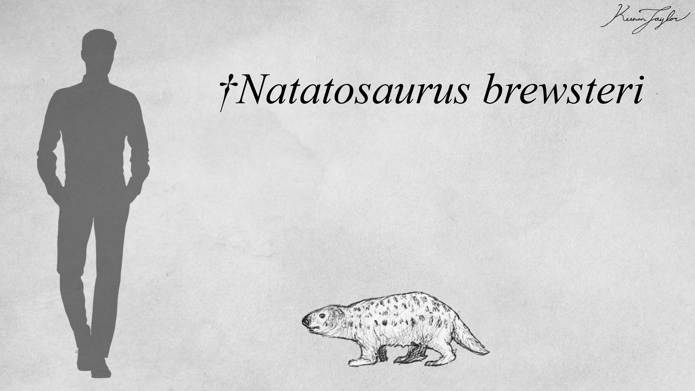
Prior to this event, the largest mammals within the Portal's territory generally weighed no more than 15-20 kilograms, with most species considerably smaller. Although mammals had already diversified into numerous ecological roles, their representation among large herbivores and predators remained limited. Tyrannosaurs occupied almost every stage of the terrestrial predatory spectrum, while hadrosaurs, ceratopsians and titanosaurs dominated much of the large-herbivore guild. Other dinosaurs, including dromaeosaurs, ceratosaurs, and various smaller theropods, occupied subordinate predatory niches. The introduction of Oligocene mammals therefore represented an unprecedented expansion of mammalian body size and ecological diversity within the northern continental ecosystems.
The circumstances surrounding the harvest were closely associated with a major volcanic catastrophe in southern Ni'Khar. The eruption, occurring approximately 30 million years ago, was of an extraordinary magnitude. Its effects were particularly devastating across the southern portions of Ni'Khar, where volcanic activity, ash deposition, and environmental disruption eliminated hundreds of plant and animal species. Although Kairul was also affected, the principal ecological devastation occurred within the territory of the Portal.
The extinction of established biological communities left extensive ecological vacancies. Once the Portal recovered from the immediate consequences of the disaster, it initiated a harvest to restore the biodiversity of its territory. The resulting introduction drew organisms from several regions of Earth, principally North America, the Northern Atlantic, and Eurasia. Although the exact geographical extent of the collection remains uncertain, the available fossil evidence indicates that the majority of the terrestrial fauna originated from North American and western European assemblages.
Unlike some of the more extensive harvests in Kaimere's history, the Oligocene event appears to have constituted a relatively concentrated episode of biological introduction rather than a prolonged sequence of repeated collections. As native organisms gradually recolonized the affected territories, the Portal's newly introduced organisms were incorporated into an ecosystem already undergoing recovery. This produced an unusual biological situation in which familiar Cenozoic mammals entered an established dinosaur-dominated environment and had to compete with organisms that had already occupied the continent's principal ecological niches for millions of years.
The initial success of several mammalian groups was considerable. Brontotheres became enormous herbivores, rhinoceroses diversified into aquatic and terrestrial megafauna, and small horses, oreodonts, and camels spread through the northern and eastern continents. Entelodonts underwent particularly extensive evolutionary diversification, eventually producing several families of large herbivores, omnivores, and predators. Adapiform primates also established themselves in numerous habitats, while parrots underwent an especially successful radiation into terrestrial, arboreal, marine, and predatory niches.
Nevertheless, the harvest did not fundamentally displace the dominant dinosaurian communities. Tyrannosaurs remained the principal apex predators, while titanosaurs and hadrosaurs continued to structure much of the terrestrial vegetation. Large mammalian specialists generally struggled to maintain their populations in the presence of these established megafauna, particularly where their ecological requirements overlapped with those of the resident dinosaurs.
The eventual disappearance of the giant brontotheres provides one of the clearest examples of this instability. Despite initially achieving enormous sizes and developing substantial populations, most disappeared within approximately three million years of their introduction. Conversely, the smaller and more ecologically flexible mammals proved considerably more successful. Their descendants diversified over millions of years, eventually establishing lineages that became important components of Kairume's terrestrial ecosystems.
The Oligocene Harvest is therefore particularly significant not because it immediately established mammals as dominant terrestrial animals, but because it introduced several evolutionary lineages that would eventually become major components of Kaimere's biological diversity. Its descendants remain especially important on the eastern continent, where the subsequent history of mammalian diversification differed substantially from that of the Known World.
02 · Environment before the harvest
Geological and Ecological Context
Approximately 31 million years ago, Ni'Khar were undergoing the initial stages of a substantial geological reorganization. Arvel was approaching it from the west, and the tectonic plate that would eventually become the foundation of Pakardia and the southern islands had begun moving northward after separating from the polar continent. These developments would eventually culminate in the extensive continental collisions associated with the Dynastic Extinction approximately 15 million years later.
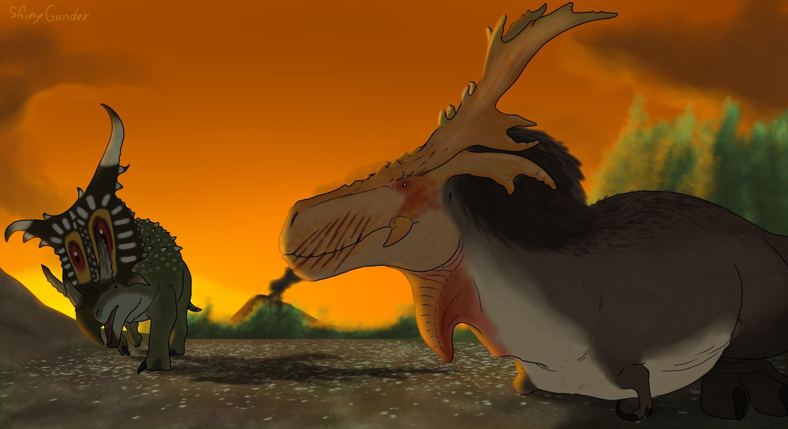
The first major disruption occurred much earlier, around 30 — 31 million years ago, when an enormous volcanic eruption devastated southwestern Ni'Khar. This eruption was exceptional in magnitude, surpassing many volcanic disturbances in the region and producing widespread ecological destruction. Although Kairul experienced some secondary effects, Ni'Khar suffered particularly severe losses. Southern Ni'Khar became an extensive wasteland, and the destruction of vegetation initiated the collapse of numerous dependent animal populations.
The eruption was particularly consequential because it occurred during an otherwise stable ecological period. Established communities had developed over tens of millions of years, and numerous species were highly specialized to the prevailing climatic and ecological conditions. The destruction of their habitats therefore produced substantial biological losses even without a simultaneous global climatic catastrophe.
Following the eruption, the Portal's territory underwent a period of ecological recovery. Vegetation began recolonizing the affected regions, while animals from neighboring territories gradually expanded into the recovering landscapes. Faunal communities from the eastern continent also began to establish themselves in portions of the northern mainland.
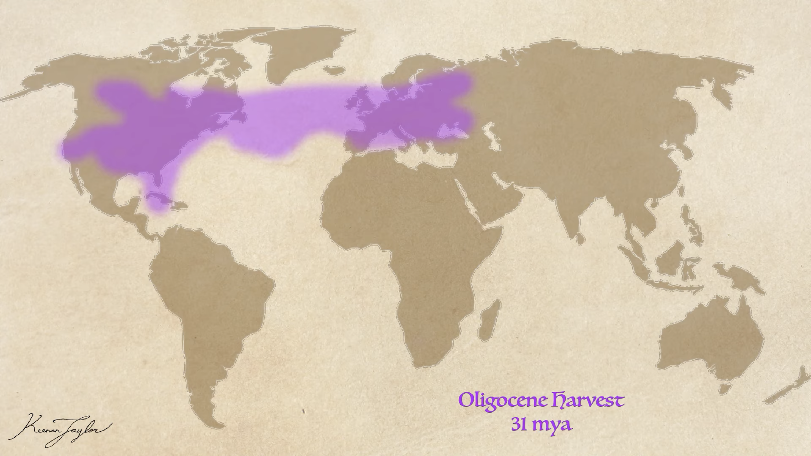
The Portal subsequently initiated the Oligocene Harvest. Its collection appears to have been concentrated in a relatively limited number of source regions rather than representing a geographically comprehensive sampling of Earth. North America and Western Europe supplied much of the identifiable fauna, although some accounts also associate the event with organisms originating around the northern Atlantic and other parts of Eurasia.
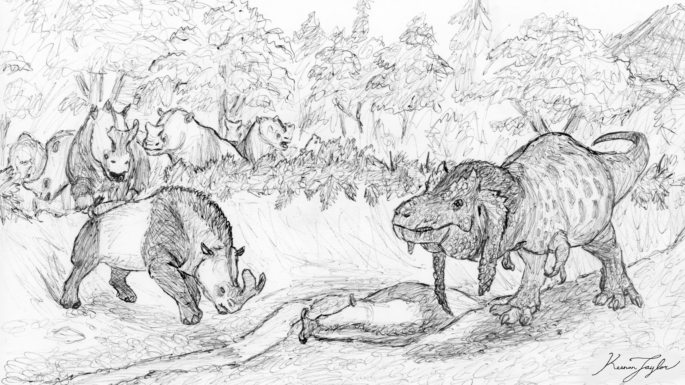
The arrival of these organisms created an unusual ecological situation. Kaimere's native mammalian fauna had remained comparatively small, and the established megafaunal guild was overwhelmingly dominated by dinosaurs. The introduced mammals therefore encountered a world in which their potential competitors and predators were considerably larger than those familiar from their ancestral environments.
The recovery of the dinosaurian fauna was equally important. As native populations returned to the affected regions, the introduced mammals increasingly encountered the same ecological pressures that had characterized Kaimere before the volcanic disaster. Their subsequent evolutionary success depended upon their capacity to occupy niches without being displaced by the recovering megafauna.
03 · Prominent Establishment of New Fauna
Mammalian Establishment and Radiation
The Teratotheres
Among the mammals introduced during the Oligocene Harvest, entelodonts or teratotheres ultimately became the most consequential evolutionary group. Their success is particularly remarkable because their earliest representatives were considerably smaller and less specialized than their later descendants.
Entelodonts were a group of hoofed mammals distributed across North America and Eurasia during Earth's late Eocene, Oligocene, and Miocene. Although historically interpreted as relatives of pigs, their more recent phylogenetic placement associates them with the broader evolutionary lineage containing hippos and cetaceans.
The earliest entelodonts were relatively small woodland inhabitants. As Earth's terrestrial environments became increasingly arid and extensive forests were replaced by open vegetation, several lineages increased in body size and developed adaptations for cursorial locomotion and omnivorous feeding. The radiation ultimately produced enormous representatives such as Daeodon, one of the largest known terrestrial entelodonts.
The animals introduced to Kaimere possessed an ecological versatility that allowed them to adapt quickly to their new environment. They were predominantly cursorial omnivores, capable of exploiting a variety of plant and animal resources. Their ability to scavenge, forage, and consume small prey was particularly useful in an ecosystem where large predatory dinosaurs frequently left substantial quantities of food available.
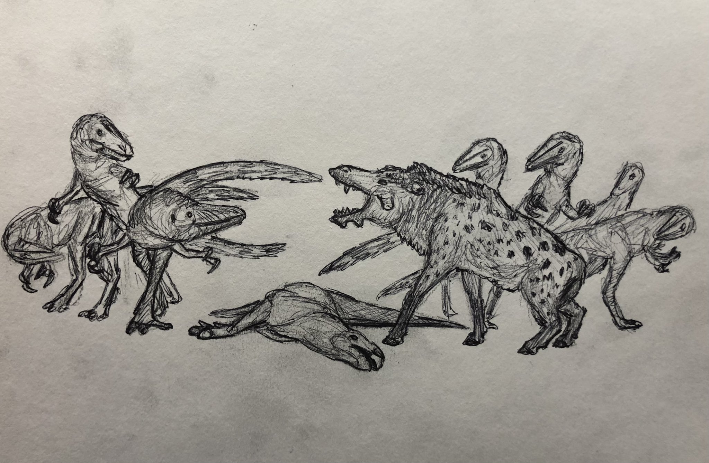
Entelodonts appear to have been among the earliest large mammals to establish themselves in Kairul. Their initial representatives weighed approximately 150 kilograms, making them the largest mammals on the continent at the time. This was still relatively modest compared with the enormous dinosaurs that dominated the landscape. Tyrannosaurs, dromaeosaurs, and ceratosaurs remained the principal predators, and entelodonts initially occupied a subordinate ecological position.
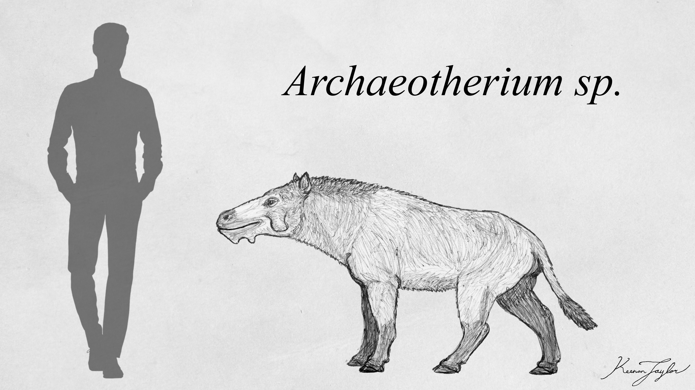
Nevertheless, their establishment was followed by remarkably rapid diversification. The ancestral Kairulan population is generally believed to have descended from an Archaeotherium-like animal, potentially belonging to one of the smaller species. The precise identity of this ancestor remains unresolved, and it is uncertain whether multiple entelodont species were collected during the original harvest.
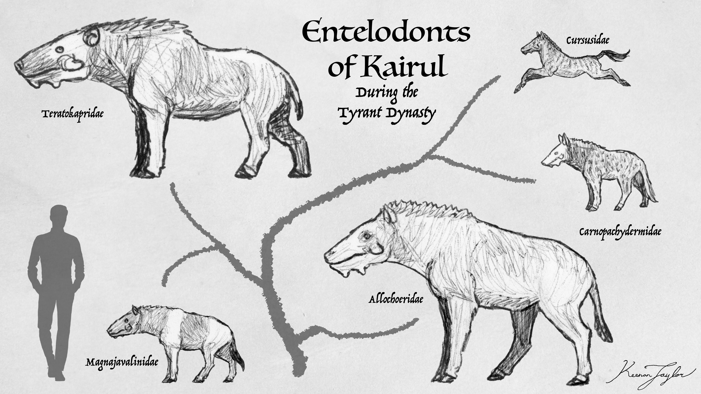
Regardless of the number of founding species, the subsequent radiation was extensive. Within a few million years, as many as five distinct entelodont families had evolved in Kairul. Ni'Khar also developed its own endemic entelodont lineages, although the evolutionary relationships between the northern and eastern populations are not fully established.
During the Tyrant Dynasty, two entelodont families achieved enormous body sizes, rivaling the largest representatives known from Earth, including Daeodon and Paraentelodon. Their remaining relatives retained more moderate proportions, generally weighing around 100 kilograms, while some lineages became smaller still, potentially in response to the intense equatorial heat.
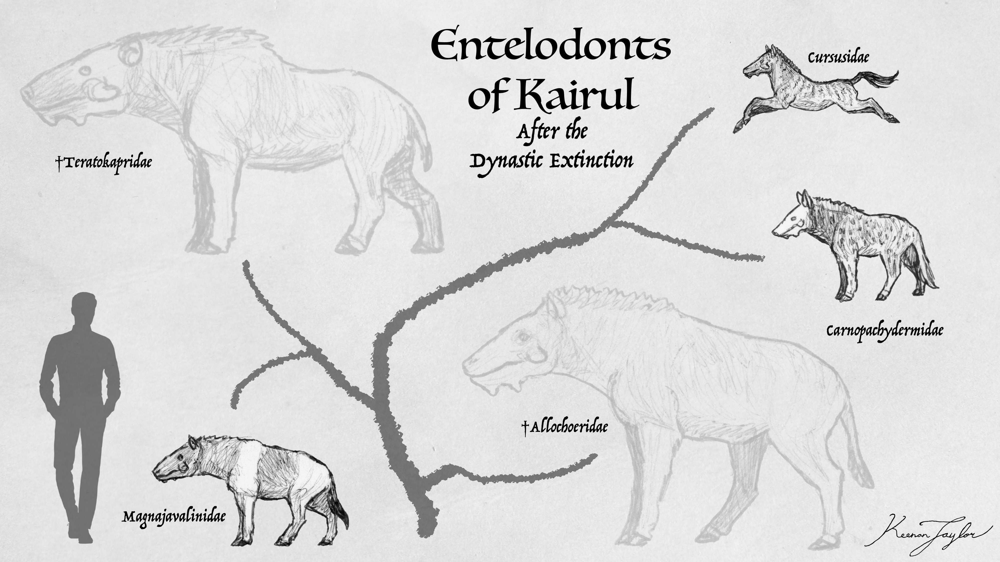
The five-family radiation represents one of the most substantial mammalian evolutionary developments of the Tyrant Dynasty. Although the largest families would eventually disappear during the Dynastic Extinction, the smaller representatives survived and became the foundation of a subsequent adaptive radiation.
The Brontotheres
The brontotheres were among the largest and most visually imposing mammals introduced during the Oligocene Harvest. Their appearance represented an extraordinary expansion in mammalian body size within Kaimere, where native mammals had previously remained relatively insignificant in the megafaunal guild.
The earliest specimens associated with the harvest belong to the genus Megacerops. These animals were already enormous by terrestrial mammalian standards, with large individuals reaching approximately 2.5 meters at the shoulder and possessing body masses comparable to Asian elephants.
Their most distinctive anatomical feature was the development of paired slingshot-shaped cranial projections. These structures are frequently reconstructed as enlarged ossicones, comparable in general appearance to those of giraffes, although an alternative interpretation proposes that they supported substantial keratinous coverings resembling horns.
Brontotheres initially experienced considerable success in Ni'Khar. Their substantial body mass and presumed herd organization provided a degree of protection against the large tyrannosaurs inhabiting the continent. Although they did not possess the formidable defensive weaponry of ceratopsians, their size alone would have made adult individuals difficult and potentially dangerous prey.
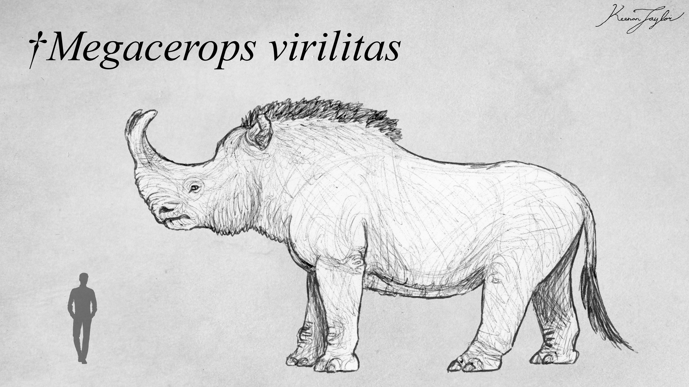
Approximately one million years after their introduction, the giant Megacerops virilitas had evolved. Its largest males are estimated to have reached approximately 15 tons, although individuals closer to 10 tonnes were probably more representative of the species. Considerable variation in cranial structures is evident, and males are presumed to have possessed larger projections on average, although substantial overlap between the sexes may have existed.
Another species, Megacerops harknessi, was considerably more abundant. Numerous geological formations preserve evidence of extensive herds containing both males and females, indicating that the species was particularly successful across its geographical range. Their distribution initially centered upon southern Ni'Khar, subsequently expanding northward and eventually reaching Kairul. This dispersal was likely facilitated by a period of cooler climatic conditions and associated reductions in sea level, which made geographical interchange between the continents considerably easier.
Despite their initial success, the giant brontotheres disappeared remarkably quickly. Within approximately three million years of their introduction, most of the large representatives had become extinct. There is some evidence suggesting that a relict population survived in northern Kairul much later, potentially persisting until the conclusion of the Tyrant Dynasty.
The reasons for their disappearance remain uncertain. Predation by large theropods has historically been considered a possible explanation, particularly given the abundance of tyrannosaurs and other large predators. However, the initial success of brontotheres makes it unlikely that predation alone explains their rapid disappearance. A more convincing interpretation concerns their ecological specialization. Although Kaimere initially offered considerably more favorable conditions than the increasingly open and arid environments of contemporary Earth, their enormous size and dependence upon particular vegetation communities may have made them vulnerable to relatively modest environmental changes. Competition from other herbivorous mammals may also have increased as additional introductions became established.
Their disappearance illustrates the limitations of extreme body-size specialization in a dynamic environment. Despite initially becoming some of the largest terrestrial mammals on Kaimere, the brontotheres failed to establish the same lasting ecological presence as several considerably smaller mammalian lineages.
Horses and Rhinoceroses
Although the brontotheres became the most recognizable giants of the Oligocene Harvest, their long-term evolutionary influence was considerably less than that of the horses and rhinoceroses.
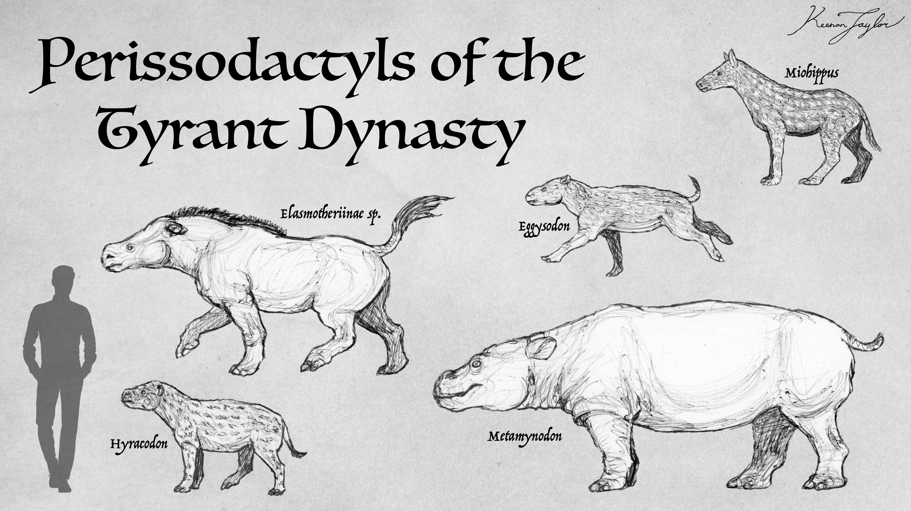
Both groups were introduced before developing the anatomical characteristics commonly associated with their modern terrestrial relatives. Many of their ancestral representatives were relatively small, and their body proportions could make their relationships difficult to recognize without detailed anatomical examination.
The horses introduced during this period were predominantly small-bodied animals. Numerous species broadly associated with Miohippus weighed approximately 20–30 kilograms. Their locomotor adaptations were relatively modest compared with those of later equids, and they occupied ecological roles associated with small browsing and mixed-feeding herbivores.
On Earth, horses were experiencing a substantial decline during the Eocene, a trend that would continue throughout much of the Oligocene. In Kaimere, however, the introduction of these animals occurred under entirely different ecological circumstances. The absence of substantial native mammalian competitors created opportunities for expansion, while the enormous diversity of habitats across Ni'Khar and Kairul provided considerable evolutionary flexibility.
Rhinoceroses were similarly represented by a wide variety of relatively small and anatomically generalized species. Most lacked the horns associated with modern rhinoceroses on Earth, while several of the largest representatives possessed adaptations for semiaquatic environments.
Some fossils are tentatively assigned to Diceratherium, although the absence of preserved horns has made these classifications uncertain. Other specimens resemble Metamynodon, representing animals already adapted to aquatic or semiaquatic lifestyles. European introductions may have included animals approaching the size of small Sumatran rhinoceroses, generally weighing between 500 and 700 kilograms.
Nevertheless, many of the most successful rhinoceroses were considerably smaller. Forms resembling Hyracodon and Eggysodon generally weighed no more than approximately 100 kilograms, and these smaller generalists would provide much of the evolutionary foundation for the subsequent radiation.
Following their establishment throughout Ni'Khar and Kairul, horses and rhinoceroses underwent extensive diversification. Numerous endemic families emerged, with some lineages becoming adapted to entirely different ecological environments from those occupied by their Earth ancestors.
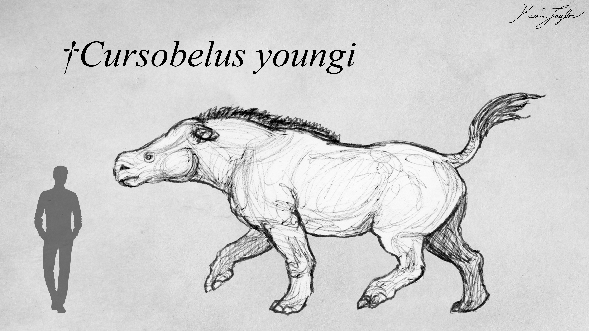
Among rhinoceroses, two major evolutionary strategies became particularly successful. The first involved increasingly cursorial forms specialized for open environments. These animals developed longer limbs, efficient locomotion, and social structures supporting large herds. Several species eventually exceeded two tons, establishing themselves as important components of the megafaunal herbivore community.
The second major radiation involved semiaquatic rhinoceroses. Descending from ancestors comparable to Metamynodon and other early aquatic rhinocerotoids, these animals independently evolved adaptations for life in wetlands and shallow-water environments. Their success was particularly pronounced in Kairul, where extensive marshes, river systems, and shallow basins provided suitable habitats.
Live birth was an important component of their evolutionary success. Unlike the egg-laying dinosaurs with which they competed, rhinoceroses could produce developed offspring without requiring vulnerable nests. This provided considerable advantages in competitive wetlands and environments where nest predation was substantial.
Numerous rhinocerotoid genera and even entire families independently developed semiaquatic adaptations as their ancestral populations dispersed through the northern and eastern continents.
The success of the rhinoceroses is especially important because it demonstrates that mammals could establish themselves within the large-herbivore guild without requiring the extinction of their dinosaurian competitors. They coexisted with hadrosaurs, ceratopsians, and juvenile sauropods while exploiting differences in feeding behavior, reproduction, and habitat use.
Horses and rhinoceroses consequently became two of the most enduring mammalian legacies of the Oligocene Harvest.
Camels and Oreodonts

The camelids introduced during the Oligocene Harvest represented a diverse assemblage of relatively small to medium-sized mammals. Their ancestral representatives had not yet acquired the proportions and ecological specializations associated with many modern camelids. Instead, they possessed a range of generalized body plans, allowing them to exploit browsing, grazing, and mixed-feeding opportunities across the recovering ecosystems of Ni'Khar and Kairul.
Their original populations appear to have been comparatively small, particularly when measured against Kaimere's established herbivorous dinosaurs. Nevertheless, their feeding flexibility and capacity to exploit different vegetation types permitted rapid expansion throughout the northern continent. From Ni'Khar, camelid populations subsequently dispersed into Kairul, where they encountered an extensive assortment of terrestrial habitats.
The evolutionary flexibility of camelids is particularly apparent in their ability to exploit vegetation of differing quality. Their descendants became established in woodland, open grassland, and more arid environments. This flexibility was especially advantageous in Kairul, where the geographical extent of the continent produces considerable differences in temperature, precipitation, and vegetation availability.
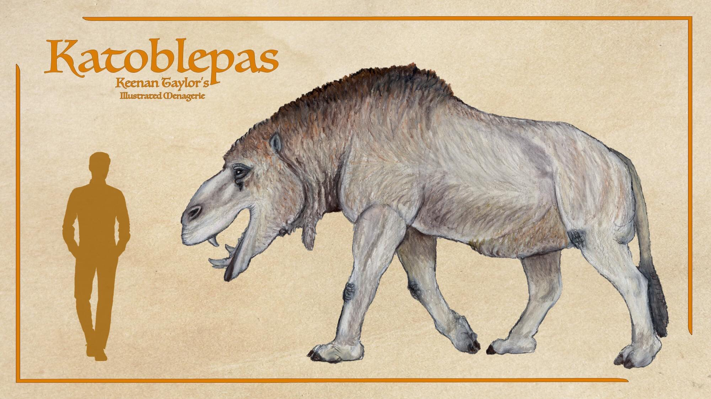
One of the most distinctive descendants is the katablepas, an exceptionally large and aggressive camelid. Its name derives from the katablepas of classical Earth literature, although the Kaimere animal possesses none of the legendary lethal gaze associated with that creature.

Oreodonts constituted another important component of the Oligocene mammalian introduction. These extinct artiodactyls, historically known from the North American fossil record, were among the most characteristic herbivores of the Oligocene and Miocene. Their anatomy combined features associated with several different groups of hoofed mammals, and their ecological diversity on Earth ranged from relatively small woodland browsers to robust, pig-like inhabitants of more open environments.
Their introduction into Kaimere provided another successful lineage of generalized herbivores. Like the camelids, oreodonts were not initially equipped to compete directly with the largest dinosaurs. Their relatively modest dimensions instead allowed them to exploit vegetation and habitats where enormous herbivores were less efficient.
The ecological opportunities available to oreodonts were considerable. The extensive vegetation communities of the northern and eastern continents contained abundant resources for medium-sized browsers and grazers, particularly in areas experiencing regular disturbance from large herbivores. Titanosaurs and hadrosaurs altered vegetation structure on a massive scale, opening woodland, creating pathways, and maintaining extensive mosaics of disturbed vegetation. These environments supported numerous smaller herbivores capable of feeding on the plants that regenerated following disturbance.
Oreodonts were well suited to such conditions. Their generalized feeding anatomy allowed them to exploit a broad selection of vegetation, while their relatively compact bodies reduced the amount of food required to sustain an individual compared with the largest herbivores. Their success was therefore not dependent upon displacing established dinosaurian herbivores but upon exploiting the ecological opportunities created by their presence.
Following their introduction, oreodonts dispersed throughout the northern and eastern continents alongside the other ungulates of the harvest. Their evolutionary history subsequently became increasingly independent of that of their terrestrial relatives. Different populations encountered different environmental conditions, and their descendants diversified in response to the particular vegetation communities and competitive pressures of their respective habitats.
Oreodonts contributed to this process by occupying the intermediate-sized herbivore guild. Their presence expanded the diversity of mammalian feeding strategies and provided additional competition for other introduced ungulates. Their descendants were consequently part of the same broader ecological restructuring that allowed horses, rhinos, camels, and peccaries to become established within dinosaur-dominated ecosystems.
Pangolins and Burrowing Beavers
Although the Oligocene Harvest is most frequently associated with the introduction of large mammals, including brontotheres, entelodonts, rhinoceroses, horses, and camels, its long-term ecological significance cannot be understood solely through its larger representatives. Among the numerous smaller animals introduced approximately 31 million years ago were two mammalian groups whose descendants would become deeply integrated into the ecological structure of Kaimere: the pholidotamorphs, particularly the pangolins, and the burrowing beavers of the genus Paleocastor. Neither group initially possessed the size or ecological prominence of the great herbivores and predators introduced during the same event. Nevertheless, both exploited relatively specialized ecological opportunities that allowed them to establish themselves within an ecosystem otherwise dominated by dinosaurs and native nontherian mammals.
Pholidotamorpha, the mammalian clade encompassing modern pangolins and several extinct lineages traditionally regarded as their closest relatives, represents one of the most distinctive evolutionary experiments among mammals. Its members are characterized by a progressive specialization toward myrmecophagy, powerful excavation capabilities, reduced dentition, and, in its most derived representatives, extensive keratinous body armor. Although modern pangolins are the only surviving representatives of the group on Earth, their evolutionary history includes a substantially greater diversity of forms, ranging from relatively generalized terrestrial insectivores to highly specialized subterranean feeders.
True pangolins were among the smaller mammals introduced during the Oligocene Harvest. Their arrival approximately 31 million years ago brought an already specialized insectivorous lineage into an ecosystem possessing extensive and comparatively underexploited resources.
Both African and Asian pangolin lineages have subsequently been introduced to Kaimere, although their modern distributions are the result of multiple harvesting events. The earliest representatives established during the Oligocene Harvest were particularly important because they provided the ancestral stock from which several endemic Kairulan lineages eventually developed. Later harvesting events, particularly those occurring during the Warring Clades period, introduced additional pangolin lineages into the Known World, substantially increasing the diversity of the continent's insectivorous mammals.
The initial establishment of pangolins was particularly successful in arboreal environments. Their powerful claws, climbing abilities, and specialized feeding apparatus allowed them to exploit termites and conifer mites inhabiting trees, branches, and decaying vegetation. This placed them in competition with established arboreal reptiles and nontherian mammals, although their specialized feeding behavior allowed them to exploit resources that were not necessarily accessible to more generalized predators.
During the latter half of the Tyrant Dynasty, pangolins became one of the principal groups of arboreal insectivores across Kairul. Their success was accompanied by the expansion of alvarezsaurids, which became particularly prominent in open terrestrial environments. The resulting ecological division was not absolute, but it represented a recognizable pattern of specialization. Pangolins dominated many arboreal insectivorous niches, while alvarezsaurids became particularly successful in terrestrial environments, especially the prairies.
Beavers are traditionally associated with the construction of dams and lodges, activities that have made their modern representatives important ecosystem engineers throughout Eurasia and North America. However, dam construction is not a universal characteristic of the family, and the evolutionary history of beavers includes numerous lineages that occupied substantially different ecological roles.
Kaimere retains considerably more of this historical diversity than modern Earth. Its beavers include several distinct ecological forms, among them aquatic and semiaquatic representatives, large herbivorous species, dam-building animals, and highly specialized burrowers.
The earliest Kairulan beavers arrived during the Oligocene Harvest. Among them was a lineage belonging to the genus Paleocastor, a group of fossorial rodents known from Oligocene North America. Unlike the familiar dam-building beavers, these animals were specialized excavators that constructed extensive subterranean burrow systems.
Their introduction occurred within a continent dominated by dinosaurs and comparatively small native mammals. Although they were not particularly large or conspicuous, their subterranean lifestyle allowed them to exploit an ecological environment largely inaccessible to the dominant terrestrial fauna.
The burrowing beavers rapidly established themselves across what are now Ni'Khar and Kairul. Their success was especially pronounced in open grasslands and prairie environments, where their digging adaptations provided protection against predators and unfavorable climatic conditions.
Their most distinctive structures were winding, corkscrew-shaped burrows. These excavations provided effective insulation against the extreme temperatures characteristic of Kaimere's prairies. By extending deep into the soil and following a spiraling subterranean course, the burrows maintained comparatively stable internal conditions despite substantial fluctuations in surface temperature.
The same structures also offered protection from predators. Unlike exposed surface nests, subterranean chambers were difficult for many large carnivores to access, particularly those lacking the specialized excavation capabilities of the beavers themselves.
Adapiform Primates
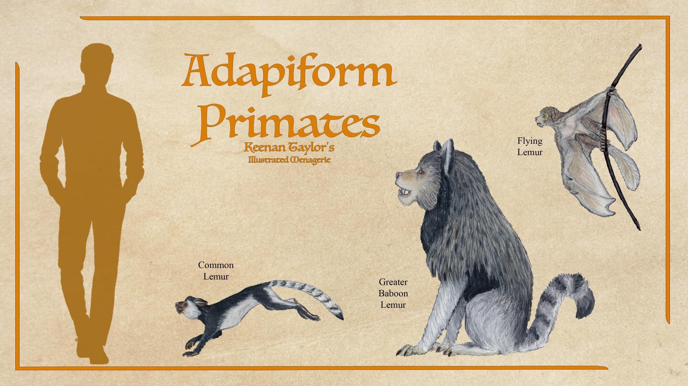
Adapiform primates were another important introduction of the Oligocene Harvest. Their subsequent history was characterized by extensive ecological diversification, particularly in response to the unusual forest environments of Kaimere.
These early primates possessed greater agility and behavioral complexity than many of the arboreal nontherian mammals inhabiting the northern continents at the time. Their grasping extremities and relatively developed sensory systems provided advantages when navigating complex vegetation.
Several lineages retained the ancestral arboreal lifestyle, remaining associated with enclosed forest habitats. However, these forms became relatively restricted as titanosaurs increasingly dominated the northern continent and maintained extensive areas of open woodland.
One radiation developed adaptations for gliding. These animals became especially successful within open forests, where the distance between substantial trees made ordinary arboreal locomotion less efficient. Gliding provided a means of moving between isolated patches of vegetation without descending to the ground, reducing exposure to terrestrial predators.
Another radiation became increasingly terrestrial. These primates developed cursorial adaptations and a body form convergent with baboons, allowing them to exploit open habitats and grasslands.
Three principal adapiform lineages remain identifiable in the modern fauna of the eastern continent. These include arboreal species associated with closed forests, cursorial forms inhabiting prairies, and gliding species adapted to the open woodlands of the Titan Gardens.
Kaimeran naturalists commonly refer to these animals as lemurs, although they are not members of the true lemur radiation. The terminology is primarily practical, allowing them to be distinguished from monkeys and other primates.
Mustelid-like Carnivorans
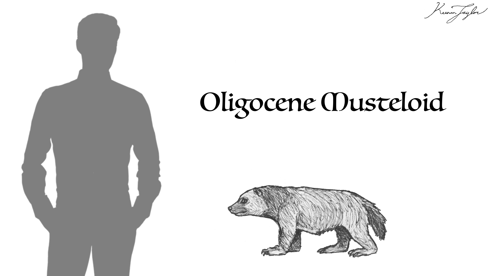
The Oligocene Harvest also introduced some of the earliest carnivoran mammals known from Kaimere. Their precise classification remains uncertain, as many specimens possess anatomical characteristics that could indicate affinities with either early mustelids or procyonids.
Some animals exhibit relatively gracile proportions, while others possess more robust skulls and postcranial anatomy. It is possible that these organisms belonged to an early radiation of caniform carnivorans predating the full differentiation of the lineages recognizable on Earth.
Their descendants developed into several endemic families throughout Kairul. Although their precise relationships to modern mustelids and procyonids are difficult to establish, they are generally regarded as basal caniforms.
These early carnivorans remained relatively subordinate predators, frequently competing with gobiconodont and multituberculate mammals occupying similar ecological niches. Their presence nevertheless contributed to the increasing diversity of mammalian predatory strategies during the Tyrant Dynasty.
Nimravids
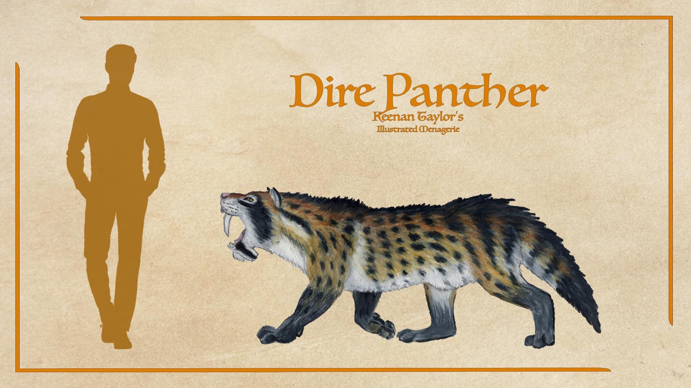
The nimravids represent one of the more ecologically distinctive mammalian lineages introduced to Kaimere during the Oligocene Harvest, approximately 31 million years ago. Although they never achieved the ecological dominance of the great entelodonts or the large rhinocerotoids that emerged from the same introduction, they established themselves within several important predatory guilds and developed a remarkable diversity of hunting strategies. Their success was founded primarily upon their ability to exploit habitats and prey resources that were less accessible to the continent's established dinosaurian predators and competing mammalian carnivores.
During the Tyrant Dynasty, nimravids became established as important subordinate predators, particularly within the forest ecosystems of Kaimere. Their distribution was strongly influenced by the relationship between vegetation structure and the ecological engineering activities of the continent's enormous herbivores.
Titanosaurs and hadrosaurs exerted considerable influence over the composition of terrestrial habitats. Through their feeding activities, movement, and repeated disturbance of vegetation, these animals maintained extensive areas of relatively open woodland. In these environments, dense forest canopies were less extensive, and the vertical structure required by climbing predators was correspondingly reduced.
Nimravids were therefore considerably less common in titanosaurs' preferred habitats. Their greatest success occurred in enclosed forests, where vegetation remained sufficiently dense to support arboreal movement and provide opportunities for hunting among the trees.
This relationship created a distinctive distributional pattern. Although nimravids were capable of occupying a variety of terrestrial environments, their greatest ecological representation was associated with forests that retained substantial canopy cover. Their abundance was consequently influenced not only by climate and prey availability but also by the activities of the enormous herbivores that shaped Kaimere's vegetation communities.
The family was not entirely excluded from more open environments. A distinct clade evolved adaptations for pursuit hunting, developing an ecological role broadly comparable to that of hyenas and Homotherium. These animals became successful predators in open forests, where they were less dependent upon climbing and could exploit terrestrial prey populations.
The coexistence of these different forms demonstrates that nimravids were not simply arboreal specialists. Rather, their original climbing adaptations provided an evolutionary foundation from which multiple ecological strategies could develop.
Hyaenodonts
The hyaenodonts were among the most ecologically versatile mammalian predators introduced to Kaimere during the Oligocene Harvest. The hyaenodonts introduced to Kaimere belonged to an ancient radiation of predatory mammals that had evolved on Earth independently of the modern carnivorans. Despite their superficially familiar appearance, they were not closely related to true dogs, cats, or bears. Their evolutionary history represented a distinct experiment in mammalian carnivory, one that had already produced a remarkable diversity of terrestrial predators before their introduction to Kaimere.
The Oligocene Harvest appears to have introduced several hyaenodont lineages, although their precise number and taxonomic identities remain uncertain. The available fossil evidence indicates that these animals were collected alongside numerous other early Cenozoic mammals from North America and Western Europe. Their subsequent diversification in Kaimere suggests that the founding populations possessed sufficient ecological variation to exploit several different environments.
At the time of their arrival, the largest native mammals within the Portal's territories were exceptionally small. Most weighed considerably less than fifteen kilograms, and even the largest rarely exceeded twenty kilograms. The hyaenodonts therefore entered ecosystems in which mammalian predation was dominated by relatively small-bodied animals, despite the presence of much larger dinosaurian predators.
This distinction is important because the hyaenodonts did not enter an environment devoid of predators. Tyrannosaurs occupied the largest terrestrial predatory niches, while dromaeosaurs and ceratosaurs were widespread and exploited an assortment of smaller and intermediate-sized prey. Nontherian mammals also maintained several important predatory roles. The introduced hyaenodonts consequently faced considerable competition, but this competition was not distributed equally across every habitat.
Their initial diversification appears to have included both terrestrial and semiaquatic forms. Terrestrial species exploited small and medium-sized vertebrates, scavenged carcasses, and competed with other mammalian predators. Semiaquatic species, meanwhile, encountered a different collection of ecological opportunities. Rivers, lakes, marshes, and seasonally inundated lowlands supported abundant aquatic prey, while the physical environment provided considerable opportunities for predators adapted to swimming and hunting along shorelines.
Kairul became one of the principal centers of hyaenodont diversity in Kaimere. Unlike the Known World, where successive harvests and the introduction of newer invasive species repeatedly altered mammalian communities, the eastern continent retained a comparatively distinctive assemblage of Oligocene-derived mammals.
Hyaenodonts were particularly successful in its freshwater ecosystems. Several lineages developed into large predators, occupying ecological positions that would otherwise have been filled by unrelated mammalian or reptilian carnivores.
Among the most remarkable examples are the fully aquatic hyaenodonts. Their existence demonstrates that the original semiaquatic adaptations of the Oligocene ancestors were capable of supporting a much more extensive evolutionary radiation. Although their precise anatomical characteristics and phylogenetic relationships remain to be established, their ecological differentiation indicates a substantial degree of specialization.
Parrots
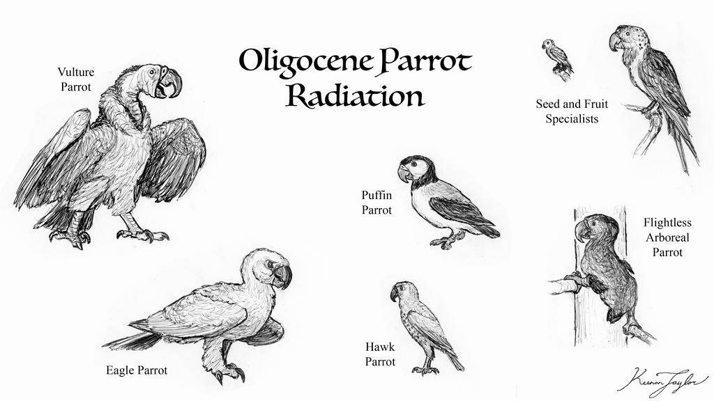
Among the birds introduced during the Oligocene Harvest, parrots were perhaps the most ecologically successful. Their flexible feeding adaptations, considerable intelligence, and powerful beaks allowed them to exploit an extraordinary range of resources.
Enantiornithian birds already occupied many of the established avian niches, but parrots demonstrated considerable ecological flexibility. Several lineages diversified into specialized feeding strategies, producing marine feeders, fruit and nut specialists, scavengers, and highly derived predatory forms.
The sea parrots became particularly successful, evolving into specialized crustacean feeders associated with coastal and marine environments. They remain widespread throughout Kaimere.
Other lineages developed increasingly predatory characteristics, converging upon the ecological forms of eagles and falcons. These raptorial parrots remain dominant in many regions beyond the Known World, although true raptors have generally outcompeted them within the Portal's territory.
The most unusual radiation occurred on Arvel. At the time of their introduction, this continent remained comparatively isolated, and its forests were populated primarily by small mammals. Parrots rapidly diversified into several arboreal ecological roles, eventually producing enormous flightless forms that converged upon the body proportions and ecological habits of great apes. These flightless parrots became robust arboreal omnivores, capable of exploiting a broad range of vegetation and animal resources. Their evolutionary success was closely associated with the absence of substantial mammalian competitors within the isolated forests of Arvel.
Following the Dynastic Extinction and the subsequent incorporation of Arvel into the Known World, however, their ecological circumstances changed. Additional mammalian predators and raptorial birds became established, contributing to the disappearance of most of the giant flightless forms. The modern ru kel represents the surviving lineage of this remarkable radiation. It is the largest living member of its clade and a notorious ambush predator, particularly recognized for its apparent hostility toward large cats.
Bathornithids
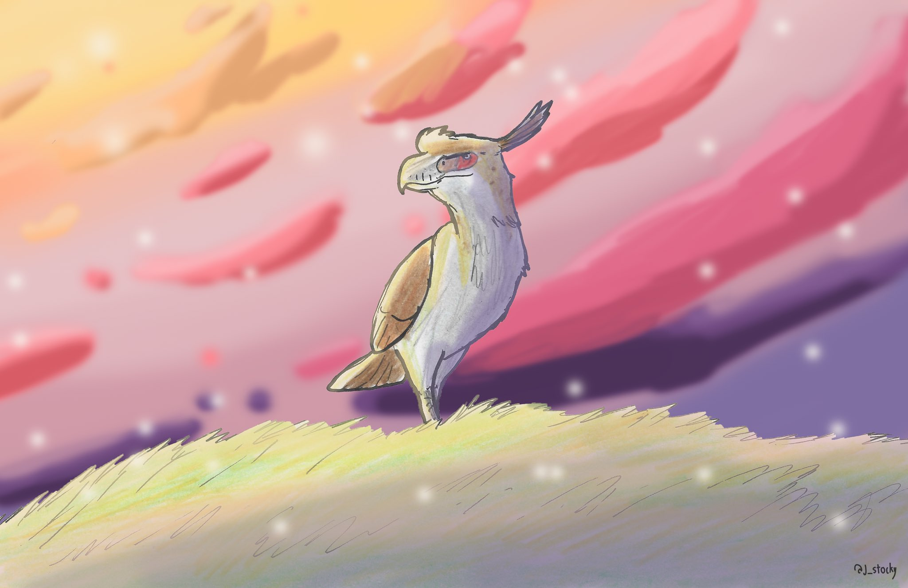
Bathornithids represented another successful avian introduction. These North American birds, frequently compared with the terror birds of South America, belonged to a predatory lineage related to the phorusrhacids.
Their ancestors possessed many of the characteristics associated with large terrestrial predatory birds, including powerful hindlimbs and adaptations for pursuing prey on the ground.
However, Kaimere presented a considerably more competitive environment than that encountered by their Earth relatives. Juvenile tyrannosaurs occupied many small and intermediate predatory niches, while dromaeosaurs and ceratosaurs were abundant throughout much of the northern continent.
The development of the cockatrices introduced an additional source of competition. These highly successful predators possessed substantial endurance, effective weapons, and considerable behavioral flexibility.
Under these conditions, bathornithids became increasingly restricted to smaller and more generalized predatory roles. Their descendants retained a presence in Kaimere, although they never developed into the enormous apex predators sometimes associated with terrestrial predatory birds.
04 · How they adjusted
Ecological Integration
Despite the extensive diversification of introduced mammals and birds, the Oligocene Harvest did not terminate the ecological stability of the Tyrant Dynasty.
The native dinosaurian fauna recovered from the volcanic disturbance and gradually reclaimed much of its previous territory. Tyrannosaurs remained the dominant terrestrial predators, while hadrosaurs and titanosaurs continued to structure the largest herbivore communities.
The introduced mammals were consequently incorporated into an established ecological hierarchy rather than replacing it. Some became important herbivores in specialized environments, while others occupied subordinate predator niches or exploited resources unavailable to the dominant dinosaurs.
The large mammals initially introduced during the harvest were particularly vulnerable to the ecological consequences of the recovering vegetation. Titanosaurs and hadrosaurs altered forest structure through extensive feeding and disturbance, maintaining the open woodland environments that many large mammals initially exploited. Their activities, however, also limited the development of certain enclosed forest habitats and changed the distribution of available vegetation.
Furthermore, many introduced mammals lacked effective defenses against the enormous predators of Kaimere. Although some groups developed substantial body size and defensive adaptations, others remained vulnerable to tyrannosaurs, dromaeosaurs, and other established carnivores.
The disappearance of the giant brontotheres is one of the clearest examples of this vulnerability. Conversely, the success of several rhinoceros families and the entelodonts demonstrates that mammals could establish enduring populations through ecological flexibility and specialization.
As the recovery progressed, the Portal ceased additional harvesting activity. Its territory had regained sufficient biological diversity, and the newly established organisms had become incorporated into the existing ecological system. The Tyrant Dynasty therefore continued for approximately another 15 million years.
05 · Impact of a near clean slate
The Dynastic Extinctions and Modern Distribution
Approximately 15 million years ago, the Tyrant Dynasty came to an end during one of the most consequential extinction events in Kaimere's recent geological history.
Continental collisions involving the approaching Pakardiant plate, the Khalin Islands, and Arvel produced extensive tectonic disruption. Continued volcanic activity in southern Ni'Khar further contributed to environmental instability, although the eruptions were less individually destructive than the event responsible for the Oligocene Harvest.
The disappearance of the enormous disturbances maintained by titanosaurs and other dominant herbivores allowed extensive closed forests to expand across portions of the northern continent. These changes eliminated substantial areas of suitable habitat for many organisms adapted to the open woodland ecosystems of the Tyrant Dynasty.
A subsequent climatic fluctuation contributed to a broader ecological collapse. Large dinosaurs, including tyrannosaurs, titanosaurs, horned dinosaurs, and hadrosaurs, disappeared from many regions. The remaining ecosystems became available for recolonization by smaller dinosaurs and mammals, which competed to occupy the newly vacant ecological roles.
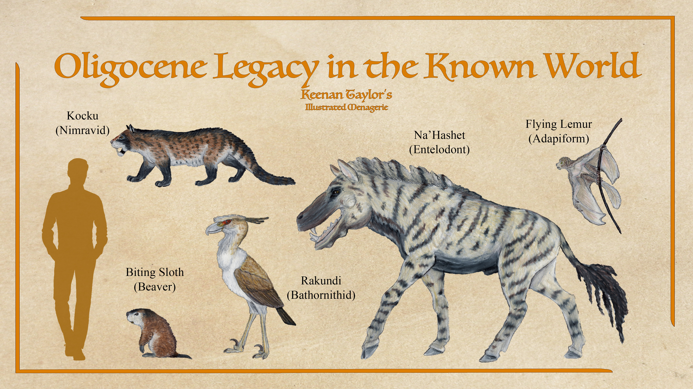
The modern distribution of Oligocene descendants is highly uneven. Within the Known World, comparatively few direct representatives of the original harvest remain. The kochu, a small nimravid, several flying lemur lineages, fossorial beavers, a small bathornithid, and the entelodont na'hashet are among the recognized survivors.
Most of the original Oligocene mammalian lineages have either disappeared or been replaced by the descendants of later harvests. Repeated biological introductions have continually altered the composition of the mammalian fauna, introducing new competitors, predators, and diseases.
The success of more recent introductions should not necessarily be interpreted as evidence of inherent evolutionary superiority. Rather, organisms arriving in a fluctuating ecological environment frequently possess advantages simply because they are introduced into communities that have not yet developed effective resistance to them.
The eastern continent provides a considerably different perspective. Its geographical isolation and reduced exposure to subsequent Portal introductions have allowed many Oligocene-derived mammalian lineages to persist. Although dinosaurs continue to dominate the largest animal niches, a substantial proportion of the continent's mammalian diversity remains descended from the Oligocene Harvest.
Adapiforms retain their three principal evolutionary radiations, occupying arboreal forests, open prairies, and the disturbed woodlands of the Titan Gardens. Nimravids remain effective coastal and terrestrial ambush predators, while hyaenodonts have diversified into several aquatic and terrestrial predatory forms.
Entelodonts are particularly prominent. Their descendants include numerous herbivorous, omnivorous, and predatory lineages, and their continued success reflects the extensive evolutionary diversification initiated during the Tyrant Dynasty.
Camels, rhinoceroses, horses, and oreodonts are similarly represented, although their ecological roles vary considerably between regions. Some are relatively small woodland browsers, while others occupy substantial portions of the megafaunal guild.
Kairul also retains a greater abundance of basal mammalian predators introduced during the original harvest. Borophagine dogs, including the panther hound, are particularly successful. These animals possess complex social structures and hunt through coordinated pack behavior, allowing them to overwhelm prey considerably larger than individual members of the pack. The persistence of these lineages makes the eastern continent one of the most important regions for understanding the long-term consequences of the Oligocene Harvest.
06 · Impact
Paleontological and Chronological Uncertainties
The precise dating of the Oligocene Harvest remains subject to some uncertainty. The generally accepted chronology places the event approximately 31 million years ago, although some accounts place its initiation closer to 30 million years ago. This difference is not necessarily substantial given the limitations of reconstructing harvesting events from geological deposits.
Harvests themselves are not directly preserved in the fossil record. Their timing must instead be inferred through the appearance of introduced organisms, the distribution of their descendants, and the stratigraphic relationships between their earliest known specimens and preceding native assemblages.
The most significant chronological difficulty concerns the brontotheres. On Earth, the group is conventionally considered to have disappeared near the end of the Eocene, approximately 34 million years ago. Yet Kaimere's Oligocene-associated assemblages contain numerous representatives of Megacerops, including exceptionally large and derived forms.
One possible explanation is that the harvest occurred earlier than currently estimated, with the earliest Kaimerean populations becoming fossilized considerably later. Another possibility is that small, geographically isolated brontothere populations survived beyond their previously recognized last appearances on Earth.
The latter interpretation is generally preferred. Most other organisms associated with the harvest are more consistent with an early Oligocene origin, and their geological distribution supports the existing chronology. An earlier Eocene introduction remains possible, but presently lacks sufficient independent evidence.
The number and precise identity of the organisms collected during the harvest are similarly uncertain. Several introduced mammals are poorly represented in the earliest deposits, and it remains difficult to determine whether particular groups were collected as multiple species or descended from a comparatively small founding population.
Entelodonts present a particularly interesting example. Their extraordinary Kairulan diversification may have originated from a single Archaeotherium-like ancestor, although the available evidence does not exclude the introduction of several ancestral species.
These uncertainties are characteristic of the study of Kaimere's biological introductions. The original harvesting events are not preserved as conventional geological events, and the evolutionary histories of their descendants frequently obscure their ancestral relationships.
07 · Why its impact matters
Evolutionary Significance
The Oligocene Harvest was an important turning point in the evolutionary history of Kaimere's mammalian fauna. Although it did not fundamentally displace the established dinosaurian ecosystems of the Tyrant Dynasty, it introduced several mammalian lineages that would become permanent and sometimes dominant components of subsequent terrestrial communities.
Its greatest contribution was the establishment of a diverse assemblage of herbivorous, omnivorous, and predatory mammals within an environment where native mammals had previously remained comparatively small. Horses, rhinoceroses, camels, oreodonts, and entelodonts introduced new ecological possibilities, while adapiforms, nimravids, hyaenodonts, and carnivorans expanded the diversity of mammalian predators and smaller terrestrial organisms.
The subsequent evolutionary histories of these groups demonstrate the importance of ecological flexibility in Kaimere. Some, such as the giant brontotheres, achieved extraordinary initial success but proved vulnerable to environmental changes and ecological specialization. Others, particularly the entelodonts, diversified sufficiently to withstand major environmental disruptions and eventually occupy entirely new ecological roles.
The harvest also established a lasting distinction between the mammalian communities of the Known World and those of the eastern continent. Repeated introductions into the Portal's territory progressively replaced many early mammalian lineages, while the eastern continent preserved a greater proportion of the original Oligocene radiation.
Ultimately, the Oligocene Harvest did not bring about the end of the Tyrant Dynasty. Instead, it introduced an entirely new evolutionary component into an otherwise mature and comparatively stable ecosystem. Its descendants would survive the eventual collapse of that system, exploit the ecological opportunities created by the Dynastic Extinction, and become enduring constituents of Kaimere's modern biodiversity.